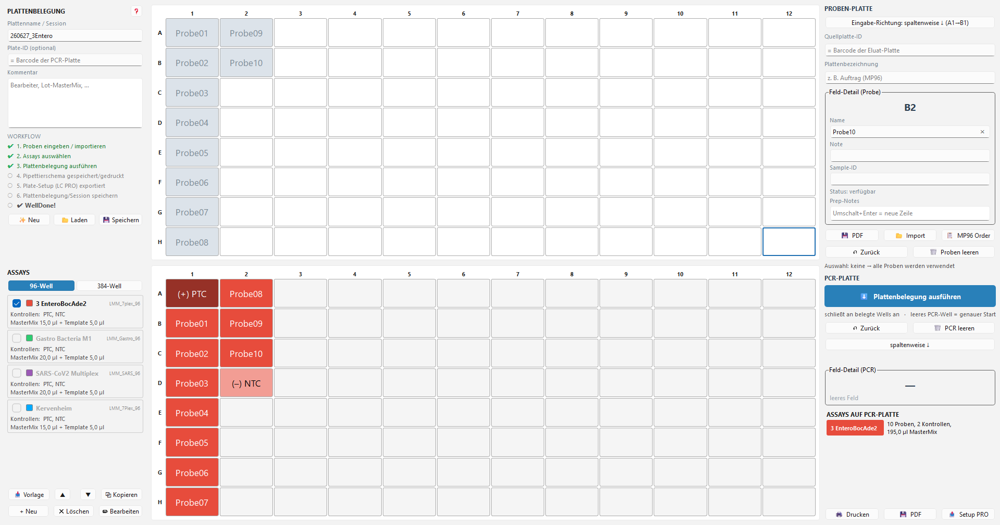
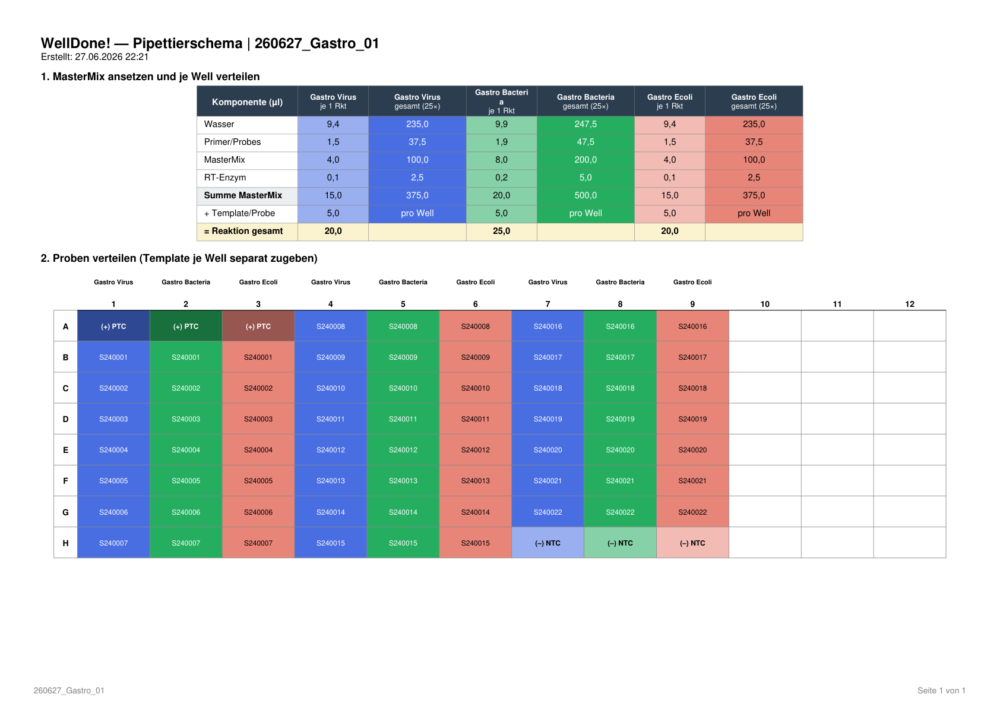

WellDone!
Plattenbelegung für den Roche LightCycler PRO
Ein kostenloses, vollständig offline laufendes Windows-Werkzeug fürs PCR-Setup.
⬇ WellDone! herunterladen
Plattenbelegung für den Roche LightCycler PRO
Ein kostenloses, vollständig offline laufendes Windows-Werkzeug fürs PCR-Setup.
⬇ WellDone! herunterladen
Auf Knopfdruck als PDF — MasterMix-Tabelle und Plattenübersicht, farblich passend zur Belegung und Programmierung des LightCycler PRO.

Windows zeigt beim ersten Mal evtl. „Der Computer wurde durch Windows geschützt":
Normal (App neu & unsigniert), erscheint nur einmal.